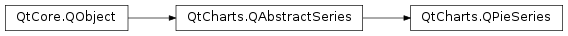

QtCharts.QPieSeries¶
Note
This class was introduced in Qt 5.7.
Synopsis¶
Functions¶
- def
__lshift__(slice) - def
append(label, value) - def
append(slice) - def
append(slices) - def
clear() - def
count() - def
holeSize() - def
horizontalPosition() - def
insert(index, slice) - def
isEmpty() - def
pieEndAngle() - def
pieSize() - def
pieStartAngle() - def
remove(slice) - def
setHoleSize(holeSize) - def
setHorizontalPosition(relativePosition) - def
setLabelsPosition(position) - def
setLabelsVisible([visible=true]) - def
setPieEndAngle(endAngle) - def
setPieSize(relativeSize) - def
setPieStartAngle(startAngle) - def
setVerticalPosition(relativePosition) - def
slices() - def
sum() - def
take(slice) - def
verticalPosition()
Signals¶
- def
added(slices) - def
clicked(slice) - def
countChanged() - def
doubleClicked(slice) - def
hovered(slice, state) - def
pressed(slice) - def
released(slice) - def
removed(slices) - def
sumChanged()
Detailed Description¶
-
class
PySide2.QtCharts.QtCharts.QPieSeries([parent=nullptr])¶ Parameters: parent – PySide2.QtCore.QObject
-
PySide2.QtCharts.QtCharts.QPieSeries.added(slices)¶ Parameters: slices –
-
PySide2.QtCharts.QtCharts.QPieSeries.append(label, value)¶ Parameters: - label – unicode
- value –
PySide2.QtCore.qreal
Return type: PySide2.QtCharts.QtCharts::QPieSlice
-
PySide2.QtCharts.QtCharts.QPieSeries.append(slices) Parameters: slices – Return type: PySide2.QtCore.bool
-
PySide2.QtCharts.QtCharts.QPieSeries.append(slice) Parameters: slice – PySide2.QtCharts.QtCharts::QPieSliceReturn type: PySide2.QtCore.bool
-
PySide2.QtCharts.QtCharts.QPieSeries.clear()¶
-
PySide2.QtCharts.QtCharts.QPieSeries.clicked(slice)¶ Parameters: slice – PySide2.QtCharts.QtCharts::QPieSlice
-
PySide2.QtCharts.QtCharts.QPieSeries.count()¶ Return type: PySide2.QtCore.int
-
PySide2.QtCharts.QtCharts.QPieSeries.countChanged()¶
-
PySide2.QtCharts.QtCharts.QPieSeries.doubleClicked(slice)¶ Parameters: slice – PySide2.QtCharts.QtCharts::QPieSlice
-
PySide2.QtCharts.QtCharts.QPieSeries.holeSize()¶ Return type: PySide2.QtCore.qreal
-
PySide2.QtCharts.QtCharts.QPieSeries.horizontalPosition()¶ Return type: PySide2.QtCore.qreal
-
PySide2.QtCharts.QtCharts.QPieSeries.hovered(slice, state)¶ Parameters: - slice –
PySide2.QtCharts.QtCharts::QPieSlice - state –
PySide2.QtCore.bool
- slice –
-
PySide2.QtCharts.QtCharts.QPieSeries.insert(index, slice)¶ Parameters: - index –
PySide2.QtCore.int - slice –
PySide2.QtCharts.QtCharts::QPieSlice
Return type: PySide2.QtCore.bool- index –
-
PySide2.QtCharts.QtCharts.QPieSeries.isEmpty()¶ Return type: PySide2.QtCore.bool
-
PySide2.QtCharts.QtCharts.QPieSeries.__lshift__(slice)¶ Parameters: slice – PySide2.QtCharts.QtCharts::QPieSliceReturn type: PySide2.QtCharts.QtCharts::QPieSeries
-
PySide2.QtCharts.QtCharts.QPieSeries.pieEndAngle()¶ Return type: PySide2.QtCore.qreal
-
PySide2.QtCharts.QtCharts.QPieSeries.pieSize()¶ Return type: PySide2.QtCore.qreal
-
PySide2.QtCharts.QtCharts.QPieSeries.pieStartAngle()¶ Return type: PySide2.QtCore.qreal
-
PySide2.QtCharts.QtCharts.QPieSeries.pressed(slice)¶ Parameters: slice – PySide2.QtCharts.QtCharts::QPieSlice
-
PySide2.QtCharts.QtCharts.QPieSeries.released(slice)¶ Parameters: slice – PySide2.QtCharts.QtCharts::QPieSlice
-
PySide2.QtCharts.QtCharts.QPieSeries.remove(slice)¶ Parameters: slice – PySide2.QtCharts.QtCharts::QPieSliceReturn type: PySide2.QtCore.bool
-
PySide2.QtCharts.QtCharts.QPieSeries.removed(slices)¶ Parameters: slices –
-
PySide2.QtCharts.QtCharts.QPieSeries.setHoleSize(holeSize)¶ Parameters: holeSize – PySide2.QtCore.qreal
-
PySide2.QtCharts.QtCharts.QPieSeries.setHorizontalPosition(relativePosition)¶ Parameters: relativePosition – PySide2.QtCore.qreal
-
PySide2.QtCharts.QtCharts.QPieSeries.setLabelsPosition(position)¶ Parameters: position – PySide2.QtCharts.QtCharts::QPieSlice.LabelPosition
-
PySide2.QtCharts.QtCharts.QPieSeries.setLabelsVisible([visible=true])¶ Parameters: visible – PySide2.QtCore.bool
-
PySide2.QtCharts.QtCharts.QPieSeries.setPieEndAngle(endAngle)¶ Parameters: endAngle – PySide2.QtCore.qreal
-
PySide2.QtCharts.QtCharts.QPieSeries.setPieSize(relativeSize)¶ Parameters: relativeSize – PySide2.QtCore.qreal
-
PySide2.QtCharts.QtCharts.QPieSeries.setPieStartAngle(startAngle)¶ Parameters: startAngle – PySide2.QtCore.qreal
-
PySide2.QtCharts.QtCharts.QPieSeries.setVerticalPosition(relativePosition)¶ Parameters: relativePosition – PySide2.QtCore.qreal
-
PySide2.QtCharts.QtCharts.QPieSeries.slices()¶ Return type:
-
PySide2.QtCharts.QtCharts.QPieSeries.sum()¶ Return type: PySide2.QtCore.qreal
-
PySide2.QtCharts.QtCharts.QPieSeries.sumChanged()¶
-
PySide2.QtCharts.QtCharts.QPieSeries.take(slice)¶ Parameters: slice – PySide2.QtCharts.QtCharts::QPieSliceReturn type: PySide2.QtCore.bool
-
PySide2.QtCharts.QtCharts.QPieSeries.verticalPosition()¶ Return type: PySide2.QtCore.qreal
© 2018 The Qt Company Ltd. Documentation contributions included herein are the copyrights of their respective owners. The documentation provided herein is licensed under the terms of the GNU Free Documentation License version 1.3 as published by the Free Software Foundation. Qt and respective logos are trademarks of The Qt Company Ltd. in Finland and/or other countries worldwide. All other trademarks are property of their respective owners.